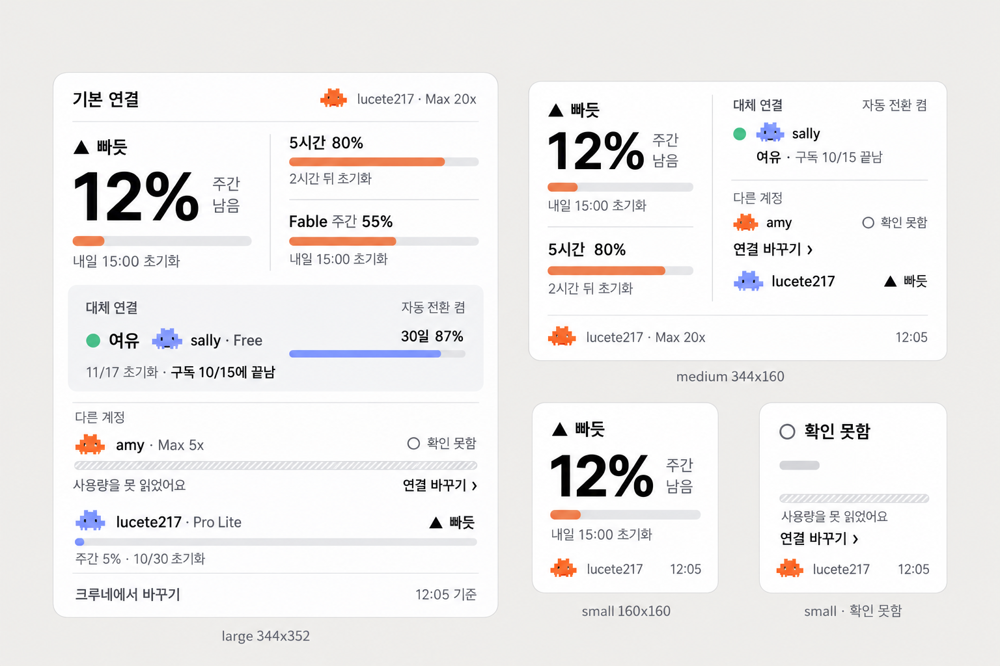
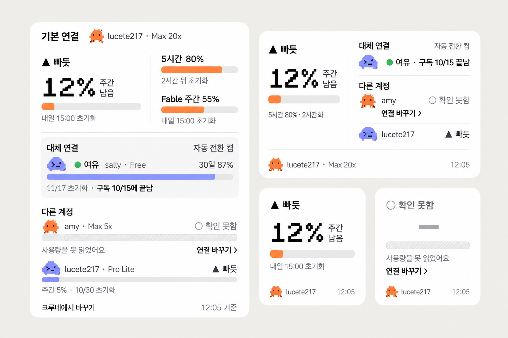
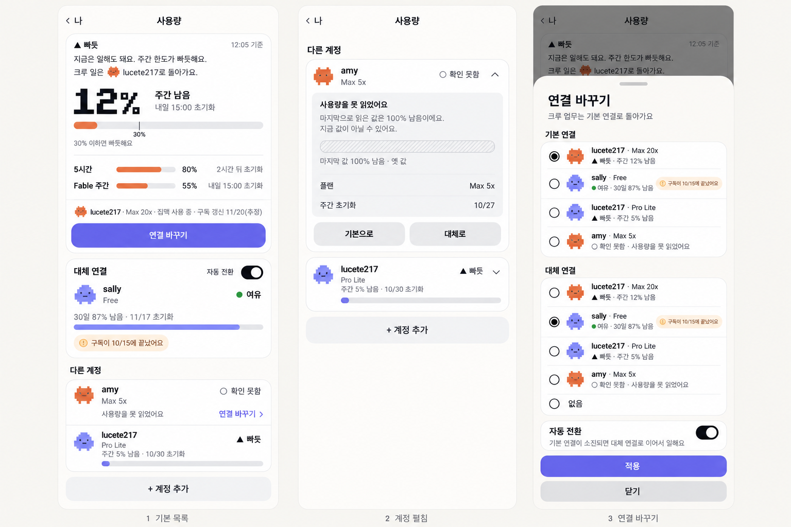

사용량 위젯·화면 시안 3차
10월 23일 12시 실제 수치입니다. 이번 판은 세 가지를 바꿨습니다. 값을 못 읽은 계정에 연결을 바꾸는 링크를 달았고, Claude와 Codex를 글자 대신 아이콘과 대표 색으로 구분했고, 크루네 화면은 크루네 공통 규격 부품으로 맞췄습니다.
이번에 바뀐 것
- 확인 못함 줄에 「연결 바꾸기 ›」 링크. 작은 위젯에서 기본 연결을 못 읽으면 숫자를 지우고 이 링크를 앞에 둡니다. 누르면 크루네의 연결 바꾸기로 갑니다. 링크는 단추가 아니라 잉크색 글자와 화살표입니다.
- 엔진은 글자 없이 아이콘과 색으로. 키키 알림 말풍선과 같은 픽셀 캐릭터를 씁니다.
Claude: 주황 픽셀 캐릭터, 막대도 주황Codex: 연보라 구름 아이콘, 막대도 연보라
- 상태는 모양과 글자. ▲ 빠듯, ● 여유, ○ 확인 못함. 색이 빠져도 읽힙니다.
- 크루네 화면은 규격 v1 부품. 보라 단추는 화면당 하나, 나머지 단추는 연한 회색 면, 선택 표시와 스위치는 잉크색, 하위 화면 제목은 일반 글꼴, 큰 숫자만 픽셀 글꼴입니다. 얼굴 그림은 위젯과 화면에서 뺐습니다. 엔진 아이콘이 그 역할을 합니다.
위젯 A. 시스템 글꼴 숫자
큰 숫자도 시스템 글꼴입니다. 가장 애플 기본에 가깝고 빠진 글자 없이 깔끔하게 나왔습니다.

위젯 B. 픽셀 숫자추천
큰 숫자 12%만 크루네 픽셀 글꼴입니다. 글꼴 느낌이 살짝 들어가고 숫자가 덜 무거워 보입니다. 그림에는 오타가 두 곳 있습니다. 중간 크기의 「5시간 80% · 2시간화」는 「2시간 뒤」가 맞고, 같은 위젯 대체 연결 줄에 이름 sally가 빠졌습니다. 구현할 때 바로잡습니다.

크루네 사용량 화면
왼쪽부터 기본 목록, 계정 펼침, 연결 바꾸기입니다. 첫 화면의 작은 링크 「연결 바꾸기 ›」 색이 보라에 가깝게 그려졌는데, 규격대로 잉크색으로 맞춥니다.

확인이 필요한 가정
- 기본 연결은 lucete217의 Claude, 대체 연결은 sally의 Codex, 자동 전환은 켬으로 그렸습니다. 이 값은 크루네 설정에 있고 위젯으로는 아직 넘어오지 않습니다.
- 링크를 누르면 해당 계정의 연결 바꾸기로 바로 가려면, 위젯이 크루네에 계정을 알려 주는 주소 연결이 새로 필요합니다.